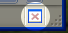
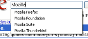
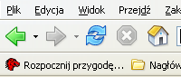

Dlaczego warto używać Firefoksa?
Jest wiele powodów, dla których warto używać Firefoksa zamiast innych przeglądarek. Oto lista najważniejszych.
Przeglądanie w kartach - surfuj szybciej!
Mozilla Firefox sprawia, że przeglądanie stron www jest łatwiejsze niż kiedykolwiek dzięki możliwości przeglądania w kartach. Przeglądanie w kartach zmienia sposób, w jaki korzystasz z Internetu, pozwalając na otworzenie strony w karcie będącej w tle i czytanie jej, kiedy będziesz gotowy. Żadnych denerwujących nowych okien, nie potrzeba też menu kontekstowych, po prostu przytrzymaj Ctrl podczas klikania na odnośnik albo użyj środkowego przycisku myszy.
Przeglądanie w kartach sprawia, że surfowanie po Internecie staje się szybsze i bardziej wydajne. Możesz się skoncentrować na czytaniu konkretnej strony, a nie co chwila przełączać okienka. Podczas czytania każdej strony, odnośniki, które otworzyłeś ładują się w innych kartach - w tle. Zatem kiedy jesteś gotowy, by je czytać, one już na Ciebie czekają. Wydaje się, że to prosty pomysł, ale przeglądanie w kartach jest nową jakością w przeglądaniu stron. Firefox daje Ci najprostszą i najbardziej intuicyjną wersję przeglądania w kartach.
Blokada wyskakujących okienek
Firefox blokuje denerwujące okienka popup. Doświadczysz dzięki temu Sieci takiej, jaka miała być - spokojna, wygodna i dostępna. Niektóre strony wykorzystują jednak wyskakujące okienka sensownie i przydatnie. Kiedy Firefox blokuje okienko, wyświetla w pasku statusu odpowiednią ikonę. Po kliknięciu na nią wyświetlona zostaje lista stron, które otwierały wyskakujące okienka. Dzięki niej możesz konkretnym witrynom zezwolić na otwieranie nowych okien.
Znajdź wszystko szybciej!
Podczas surfowania większość czasu poświęca się na wyszukiwanie różnych rzeczy. Dlatego Firefox ma najlepsze funkcje wyszukiwania pośród przeglądarek. Ctrl+K przenosi kursor do paska Google, w którym można podać szukane słowa i wcisnąć Enter, by przywołać wyszukiwanie Google. Jeśli wyszukiwane słowo wpisane zostanie do paska adresu, Firefox wywoła opcję "Szczęśliwy traf" wyszukiwarki Google (to znaczy, że automatycznie zostanie załadowana pierwsza strona odnaleziona przez Google).
Dostosowywalne paski narzędzi
Ustaw paski narzędzi w taki sposób, w jaki tylko chcesz. Możesz mieć wąski pasek tylko z tym, co najpotrzebniejsze, albo wiele pasków z wszystkimi możliwymi opcjami. Paski narzędzi Firefoksa są w pełni dostosowywalne, więc wyglądają tak, jak Ty tego chcesz. Wybierz Widok, Narzędzia, Dostosuj... i po prostu przenieś wszystkie ikony, których potrzebujesz. Firefox pozwala także tworzyć nowe paski narzędzi, a rozszerzenia często dodają nowe pozycje do palety dostępnych ikon.
Kanały RSS i Atom w Zakładkach
Najświeższe informacje automatycznie pojawiające się w Twoich Zakładkach dzięki technologiom RSS i Atom. Więcej informacji...
Rozszerzenia
Rozszerzenia to małe programy (lub wtyczki) które dodają nową funkcjonalność do Firefoksa. To może być wszystko, od przycisku po zupełnie nową funkcje, jak gesty myszy. Wspaniałą rzeczą w przypadku rozszerzeń jest to, że pozwalają one Firefoksowi pozostać małym i czystym. Każdy kto potrzebuje więcej funkcji może pobrać odpowiedne rozszerzenie. Z podstawową znajomością języków takich jak XML, CSS i JavaScript możesz także z łatwością stworzyć własne rozszerzenia.
Bezpieczeństwo
Specjaliści od bezpieczeństwa uważają Mozillę Firefox za przeglądarkę znacznie bezpieczniejszą niż wiodąca przeglądarka konkurencyjnego producenta.